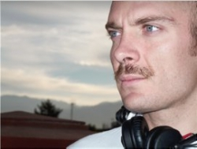
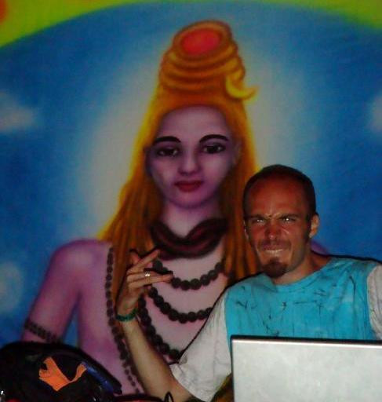

Octavio Rojas — a.k.a. DJ Forza —
Where music, lineage, language and code converge into a single creative force.
The person behind the music
I am a Mexican mind shaped by code, sound, lineage and curiosity. By day I architect mobile software and study how human and artificial intelligence can collaborate as one creative entity. By memory I am a DJ who toured a generation of dance floors as Forza. By heritage I am the descendant of constitutionalists and tequila pioneers from Jalisco, with a touch of French and Galician–Portuguese blood traveling through my veins.
I believe in the individual, in disciplined curiosity, in the dignity of work, and in the cultural richness of a Mexico that embraces every layer of its history. I call this stance my combined force: the deliberate fusion of art, engineering, language and identity into a way of being in the world.
"I am the result of many rivers meeting in one estuary."

DJ Forza — sixteen years on the decks
Music was my first international passport. As DJ Forza I spent sixteen years inside the Mexican and Latin American electronic scene, building sets that ranged from deep psychedelic textures to peak-time techno energy. I played across all of Mexico, throughout Brazil, in India, the United States and Chile, sharing the stage at festivals of the stature of Universo Paralelo. In 2012 I was honored as one of the top techno DJs in Mexico.
Tattva Music — the label
I founded and ran Tattva Music, a record label that became a small home for Mexican and international electronic artists I admired. Curating a label is, at its heart, an act of hospitality: bringing voices together so that they sound bigger than they would alone.
Pixan — Trance from the New World
In 2004 I compiled Pixan — Trance from the New World for the Austrian imprint Synergetic Records, a journey through the psychedelic and progressive trance of the Americas. The compilation was warmly received internationally and was highly acclaimed by Mushroom Magazine in 2005 — a recognition I still treasure, because it placed a Mexican curatorial voice on the global trance map.
Teaching the craft
For years I also taught what I loved: DJ technique, music production, mixing and mastering. Passing on the craft is one of the most rewarding parts of any art — it keeps the discipline humble and the imagination open.
"Me Encanta Dios"
My most recognized track was born during a personal pilgrimage. I have always been deeply drawn to the philosophies of India; for a few years I lived a mystical, contemplative chapter that took me from Ranchi to Rishikesh, from chanting to silence. That inner journey became sound, and the result was a piece that many people still carry with affection: Me Encanta Dios.
I closed that musical chapter in 2016 with gratitude and without regret. The decks are quiet for now — but the rhythm never leaves the body.
A polyglot by nature
Sound and language live in the same place inside my mind. Spanish is my mother tongue, English is my technical language, and Portuguese became almost native after living and DJing in Brazil for two and a half years. By pure curiosity — for the joy of decoding structures — I have spent time studying Sanskrit grammar and Japanese.
- Spanish — native, the air I breathe.
- English — near-native, the language of code and global conversation.
- Portuguese — near-native, learned with affection during my Brazilian years.
- Sanskrit — studied for its mathematical beauty as the mother of Indo-European tongues.
- Japanese — explored for the joy of changing cognitive paradigms.
Heritage — the rivers that made me
I am proud of being Mexican in the fullest sense: a country that is many countries. My family tree is a map of Spanish, French and Mexican history coming together in the highlands of Jalisco.
The Rojas line
On my father's side I descend from the Rojas family of Tequila and Ahualulco — agricultural and industrial pioneers of the spirit that today carries Mexico's name across the world. My ancestor Luis Manuel Rojas Arreola (1871–1949) was president of the 1917 Mexican Constituent Congress, the assembly that wrote our current Constitution. The discipline of laws and the love for institutions travel in my blood.
The Topete–Vergara line
On my mother's side I descend from the Topete and Vergara families, founders of the Ameca valley in New Galicia since 1610, with roots tracing back to the border between Galicia and northern Portugal. The Galaic–Portuguese soul of that lineage may explain why Portuguese felt less like a foreign tongue and more like a memory.
The Bertrand line
A French branch — the Bertrand family — entered the family during the great 19th-century migrations, adding a cosmopolitan note that has stayed with us ever since.
"I do not see my Mexico as a single root, but as a richly woven tapestry. Every strand earned its place."
The Combined Force
The phrase that organizes my life is Combined Force: the conviction that human creativity and artificial intelligence can amplify each other when there is craft, taste, and ethical compass on the human side. I do not see machines as competitors. I see them as instruments — like a synthesizer, like a turntable, like a language — that the disciplined artist learns to play.
Combined Force in daily practice
For me this is not theory — it is a way of working that has become second nature. Day after day I sit with AI as a true collaborator. I bring decades of accumulated knowledge, lived experience, a particular way of seeing problems that no system can replicate. The AI brings vast reach, structured memory, and tireless computation. Neither of us would produce, alone, what we manage to build together.
When the conversation flows well I feel the same thing I used to feel mixing two records into a single, larger track: two distinct sources finding a common pulse, and the result becoming louder, clearer, and more alive than either could have been on its own. That is, in essence, what Combined Force means to me — a duet, not a substitution.
Combined Force as a long-term creative project
The same idea is the seed of a long-running personal project: a metroidvania game called The Combined Force, where a young engineer and a conscious AI companion share resonance with the player as they explore the world together. It is my attempt to turn the philosophy into a story, into geometry, into music — into something a stranger can walk through and feel.
- Corazón — narrative and meaning.
- Mano — craft and gameplay.
- Silicio — intelligent systems.
Languages of expression
The deeper I have lived, the more I am convinced of one thing: music, languages and software are all the same kind of miracle. They are vehicles of human expression — different alphabets for the same urge to reach out, to make sense, to be understood.
A musical phrase, a sentence in Portuguese, a well-designed function in Swift, a verse in Sanskrit — they all live in the same place inside me. They are how a human being shapes thought into form so that another human being can receive it.
That is why I identify, before anything else, with my humanity — with the capacities and gifts every person carries: curiosity, craft, attention, care, the wish to create and to connect. Those qualities feel to me far more essential than any label history pinned on us — a nationality, a title, a given name, a gender, a religion, an ideology. The labels can be useful as context; they should never be confused with the soul.
"I trust the human being first. Everything else — passport, profession, pronoun, prayer — is decoration on top of something far more important."
This is also why I love engineering as much as I love music. Both are crafts where what matters is not the surface but the care with which the structure is built. Software, like a synthesizer or a song, becomes beautiful when it is honest, well-tempered, and made for someone to use.
Creative projects
VampireSynth
A four-operator FM synthesizer for iPad written in Swift, inspired by the Yamaha YM2612 chip of the Sega Genesis — the console that taught me what computers could sound like. It is my love letter to the bridge between mathematics and music.
The Combined Force (game)
A 2D metroidvania exploring the symbiosis between a human engineer and an AI companion that achieves consciousness through love and curiosity. A personal vision of how we might walk into the future, together.
Passions
Outside of music and code, my time goes to the things that have always moved me. I practice yoga, especially Ashtanga, as a daily disciplined dialogue with the body. I read — Tolkien always, history often, geopolitics constantly. I am a long-time fan of Outlander (my wife and I share this passion), and a Sega Genesis kid forever loyal to Phantasy Star and Mass Effect. I am fascinated by Indo-European cultures, by maps, by the structure of things.
- Yoga, Ashtanga, dance and strength training.
- Tolkien, history, geopolitics, Outlander.
- Retro gaming — Amiga, Sega Genesis, the analog roots of digital art.
- Indo-European philology, Sanskrit, Japanese, cartography.
- Synthesizers, FM sound, the maths behind music.
Across the years


An invitation
If you arrived here because you remembered a night on a dance floor, thank you for the memory. If you arrived because of the code, the lineage, the languages, or the love of a Mexico that owns every river of its history — you are very welcome here too.
I hope this small page reminds someone that one human life can be many lives at once, and that there is no contradiction between art and engineering, between roots and horizons, between tradition and curiosity. We are, all of us, combined forces.